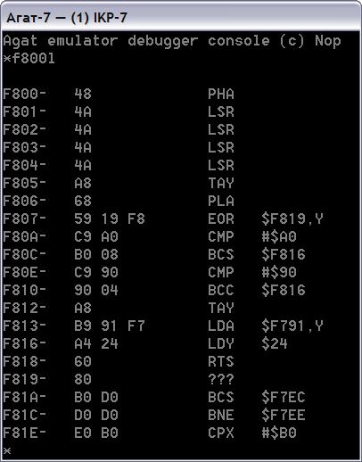

Начиная с версии 1.20, эмулятор содержит встроенный отладчик, совместимый по набору команд с Системным Монитором. Для активизации отладчика необходимо, чтобы в настройках эмулятора был выбран пункт "Использовать отладчик".
При этом в контекстном меню эмулируемых систем появляется пункт "Запустить отладчик", выбор которого открывает дополнительное окно отладки:

Работа с отладчиком в целом аналогична работе с Системным монитором. Принципиальное отличие между отладчиком и Системным монитором заключается в том, что отладчик выполняется вне контекста эмулируемой системы и не зависит от состояния банков памяти, режима эмуляции ПЗУ и пр. Кроме этого, работа системы в режиме отладки не прерывается (если в настройках эмулятора выбран режим фонового исполнения), то есть, появляется возможность изменять состояние памяти эмулятора параллельно с выполнением в нём программы.
Команды отладчика :
Команда |
Описание |
|---|---|
| [a1][.a2] | Выдача в консоль эмулятора дампа памяти с адреса a1 по адрес a2 включительно. Если адрес a1 не указан, выдаётся участок, начиная с последнего используемого адреса +1. Если не указан адрес a2, выдаётся значение байта памяти по адресу a1. Если не указан ни один из адресов (пустая строка), последовательно выдаются участки памяти размером 1..8 байт с увеличением текущего адреса. |
| [a]:d1 [d2]... | Запись байта (или нескольких байт) данных по последовательным адресам, начиная с адреса a. Если значение адреса не указано, используется текущее значение адреса записи, непосредственно следующим за последним записанным блоком данных. |
| [a]L | Дизассемблирование участка памяти (20 команд), начиная с адреса a, либо с конца последнего дизассемблированного блока. В зависимости от настроек эмулятора, поддерживается отображение недокументированных команд процессора 6502, либо расширенных команд процессора 65C02. |
| a1[.a2]R | Чтение блока данных из файла по адресу a1. Если адрес a2 не указан, размер блока определяется размером файла. Если при чтении файла возникла ошибка, или его размер оказался меньше размера блока, выдаётся сообщение "ERR". |
| a1.a2W | Запись блока данных, начиная с адреса a1 по адрес a2 (включительно) в файл. Оба адреса должны присутствовать в команде. |
| a1<a2.a3M | Перемещение (если a1 вне диапазона адресов a2..a3) или повторение блока памяти a2..a3 на новый адрес a1. Пример перемещения: 2000<3000.3FFFM. Пример повторения: 2001<2000.2FFFM. |
| a1<a2.a3V | Аналогично команде M, только выполняется сравнение участков памяти. На консоль выдаются адреса и значения байт, отличающиеся друг от друга. |
| [a]G | Задание текущего значения регистра PC процессора. Если эмулируемая система выполняется в фоновом режиме, произойдёт мгновенный переход процессора на исполнение кода с адреса a. Если эмулируемая система остановлена, продолжение выполнения с указанного адреса будет производиться сразу после выхода из отладчика или переключения на окно эмулируемой системы. Если адрес a не указан, используется предыдущее значение этого адреса. |
| Q | Выход из отладчика, возврат к работе с эмулируемой системой |
| ? | Выдача на консоль отладчика краткой справки о доступных командах и их синтаксисе. |
См. также: Контекстное меню системы , Клавиатурные сокращения, Главное меню